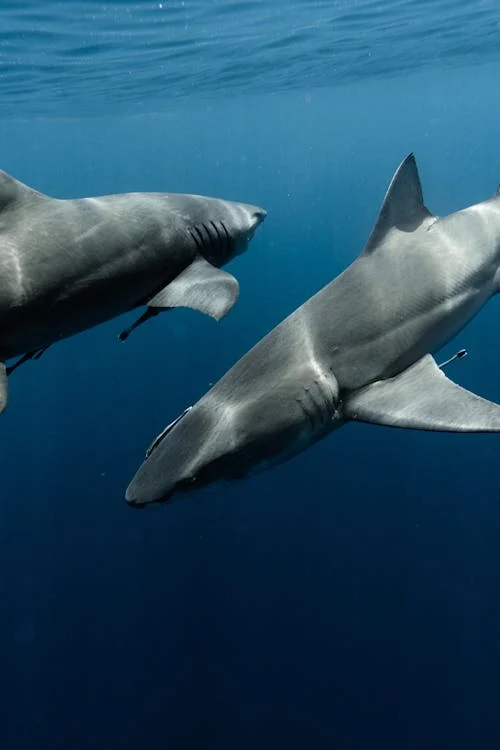
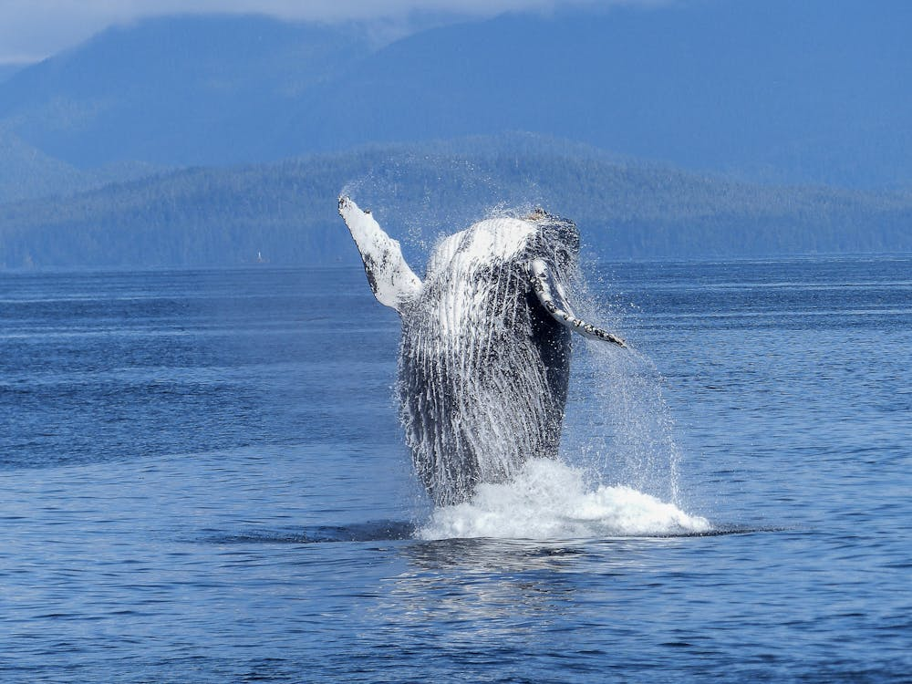
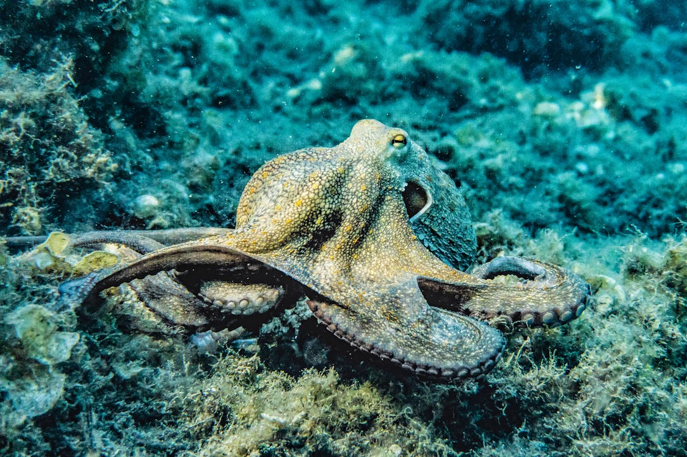
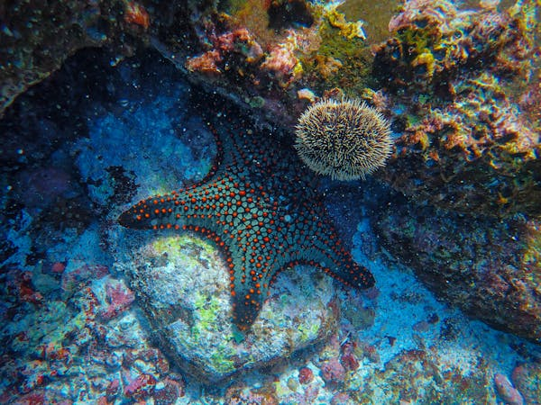
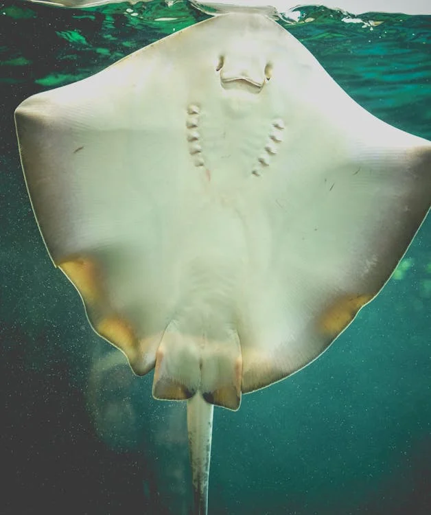

Animais Marinhos
Explore as profundezas dos oceanos e conheça as criaturas incríveis que vivem nas águas do nosso planeta.
Golfinho

Inteligente e sociável, é um dos animais mais carismáticos dos mares.
Tubarão
Um predador incrível que desempenha um papel vital no equilíbrio marinho.
Baleia
O maior animal do planeta, majestoso e imponente.
Cavalo-marinho

Pequeno e único, é conhecido pela forma de cuidar dos filhotes.
Polvo
Inteligente e adaptável, é um mestre da camuflagem.
Estrela-do-mar
Colorida e fascinante, é um símbolo das profundezas.
Tartaruga-marinha

Antiga e resiliente, é uma viajante dos oceanos.
Água-viva

Graciosa e translúcida, desliza pelas correntes marinhas.
Peixe-palhaço

Vive em simbiose com anêmonas e é conhecido por sua coloração vibrante.
Raia
Elegante e plana, desliza graciosamente pelo fundo do mar.